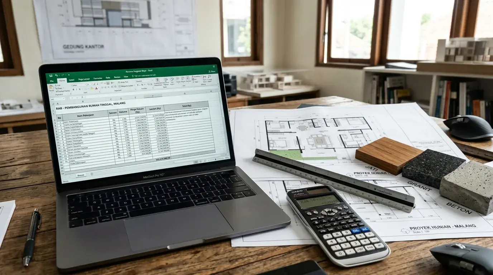

Ringkasan Inti
- RAB yang disusun bersama jasa desain rumah mencakup rincian biaya perencanaan arsitektur, volume material riil, upah tenaga kerja, serta pengawasan berkala secara transparan.
- Alokasi kontinjensi minimal 10 hingga 15 persen tetap wajib disiapkan meski proyek sudah didampingi perencana profesional untuk mengantisipasi dinamika teknis lapangan.
- Keterbukaan informasi batas anggaran (budget ceiling) sejak konsultasi awal membantu arsitek merekomendasikan tata letak ruang dan alternatif material yang paling realistis.
- Penerapan Gambar Kerja Detail (DED) yang tuntas menjadi kunci mencegah perubahan desain di tengah konstruksi yang sering memicu pembengkakan biaya.
Daftar Isi Artikel
Membangun atau merenovasi hunian impian di Malang sering kali menghadapi tantangan klasik: realisasi pengeluaran yang melonjak jauh melampaui estimasi awal. Melibatkan jasa desain rumah Malang profesional sejak fase pra-konstruksi bukan hanya sekadar menghasilkan visualisasi 3D yang megah, melainkan fondasi vital dalam menyusun Rencana Anggaran Biaya (RAB) yang presisi, terukur, dan transparan.
1. Bagaimana Jasa Desain Rumah Membantu Menyusun RAB yang Akurat?
Penyusunan anggaran yang akurat tidak dapat dilakukan hanya dengan mengalikan luas bangunan dengan taksiran kasar harga per meter persegi. Jasa desain rumah profesional di Malang memulai proses perhitungan dari pemetaan kebutuhan ruang keluarga, orientasi tapak lahan, serta preferensi estetika yang disesuaikan dengan kemampuan finansial pemilik rumah.
Arsitek menerjemahkan konsep visual ke dalam dokumen Gambar Kerja Detail atau Detail Engineering Design (DED). Dari gambar kerja berskala inilah, setiap volume pekerjaan dapat dihitung secara matematis melalui metode Bill of Quantities (BQ). Mulai dari kubikasi galian tanah, volume pembesian beton bertulang, luas pasangan dinding bata, hingga meter persegi genteng penutup atap. Berdasarkan database harga material terkini dan standar Analisis Harga Satuan Pekerjaan (AHSP) wilayah Malang Raya, angka estimasi yang dihasilkan memiliki deviasi sangat minim terhadap harga realisasi di pasar.

2. Komponen RAB yang Sering Terlewat oleh Pemilik Rumah
Banyak pemilik rumah yang mencoba menyusun perkiraan biaya mandiri merasa kaget ketika biaya proyek membengkak puluhan persen di tengah jalan. Hal ini umumnya terjadi karena beberapa komponen pengeluaran krusial terlewat dalam perhitungan awal:
- Biaya Perizinan dan Legalitas: Pengurusan Persetujuan Bangunan Gedung (PBG) via SIMBG, retribusi daerah, dan dokumen teknis persyaratannya kerap diabaikan di awal perencanaan.
- Jasa Pengawasan Berkala Arsitek: Pengawasan berkala memastikan kontraktor bekerja sesuai spesifikasi DED sehingga terhindar dari kesalahan konstruksi yang mahal untuk diperbaiki.
- Pekerjaan Fasilitas Luar (Infrastruktur Site): Konstruksi pagar keliling, perkerasan carport, drainase resapan air hujan, instalasi septictank biofil, dan penataan taman sering kali lupa dihitung ke dalam RAB struktur utama.
- Dana Kontinjensi Proyek: Dana cadangan untuk mengantisipasi ketidakpastian cuaca di wilayah Malang atau kenaikan harga komoditas material bangunan selama masa pembangunan.
Catatan Arsitek Malang
Jangan pernah memulai tahap tender atau pembangunan sebelum dokumen Gambar Kerja Detail (DED) rampung 100%. Di Arsitek Malang, RAB yang kami susun selalu berbasis volume riil BQ dan indeks AHSP Jawa Timur terkini, sehingga Anda memegang kendali penuh atas pemilihan grade material tanpa risiko dipermainkan oleh kontraktor nakal.
3. Cara Memastikan Anggaran Konstruksi Tidak Meleset dari Rencana Awal
Menjaga agar realisasi pengeluaran tetap disiplin membutuhkan sinergi kerja yang baik antara pemilik rumah, tim arsitek, dan kontraktor pelaksana. Disiplin terhadap desain yang sudah disetujui menjadi pilar utama; mengganti spesifikasi keramik atau mengubah letak partisi ruangan saat dinding sudah terbangun adalah sumber utama kebocoran anggaran.
Langkah strategis yang wajib diterapkan adalah sistem *Change Order* tertulis. Apabila ada perubahan yang mendesak, arsitek akan menghitung ulang kompensasi biaya dan waktu terlebih dahulu sebelum pekerjaan dieksekusi di lapangan. Selain itu, simpanlah dana kontinjensi 10–15% di rekening terpisah agar tidak terpakai untuk pos belanja lain yang tidak direncanakan.
4. FAQ (Pertanyaan Sering Diajukan)
Apakah jasa desain rumah Malang selalu menyertakan RAB dalam layanannya?
Tidak semua biro arsitek menyertakan RAB secara otomatis di paket konsep awal. Pastikan Anda memilih paket perancangan komplit yang mencakup dokumen Gambar Kerja Teknis (DED), Rencana Kerja & Syarat (RKS), serta Rencana Anggaran Biaya (RAB/BQ) yang siap dijadikan acuan tender pelaksana.
Berapa persen kontinjensi yang perlu disiapkan meski sudah menggunakan jasa desain?
Besaran kontinjensi yang disarankan arsitek berlisensi adalah 10% hingga 15% dari total nilai proyek fisik. Alokasi ini sangat krusial untuk mengamankan proyek terhadap fluktuasi harga komoditas semen dan baja serta kendala cuaca ekstrem di Malang Raya.
Apakah RAB bisa berubah setelah disepakati dengan jasa desain rumah?
RAB awal tetap menjadi acuan batas standar. Perubahan baru dapat terjadi apabila pemilik proyek meminta pergantian spesifikasi finishing mewah atau perluasan ruang di tengah konstruksi melalui mekanisme addendum kontrak yang disetujui bersama.
Ingin RAB Rumah Anda Presisi & Anti Boncos?
Konsultasikan kebutuhan denah ruang, visual 3D photorealistic, dan dokumen RAB detail transparan bersama tim Arsitek Malang.

Muhammad Musyaffa
Penulis & Tim Riset Arsitektur Maroon Arsitek Malang, spesialis manajemen anggaran konstruksi, Bill of Quantities (BQ), dan optimalisasi denah tropis efisien biaya.